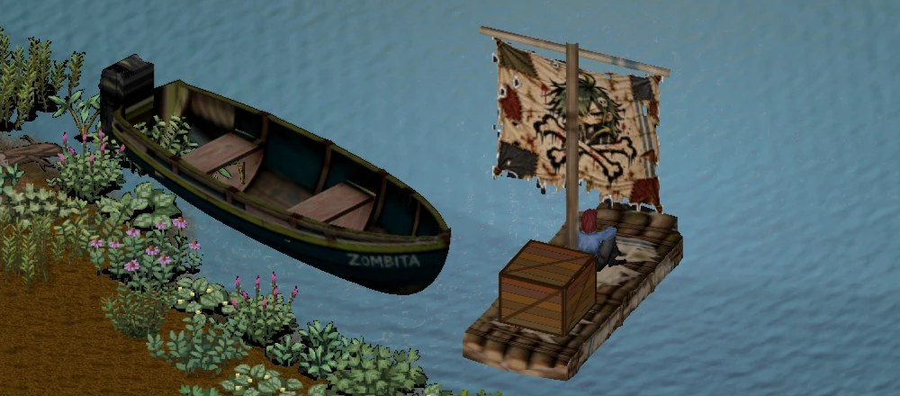
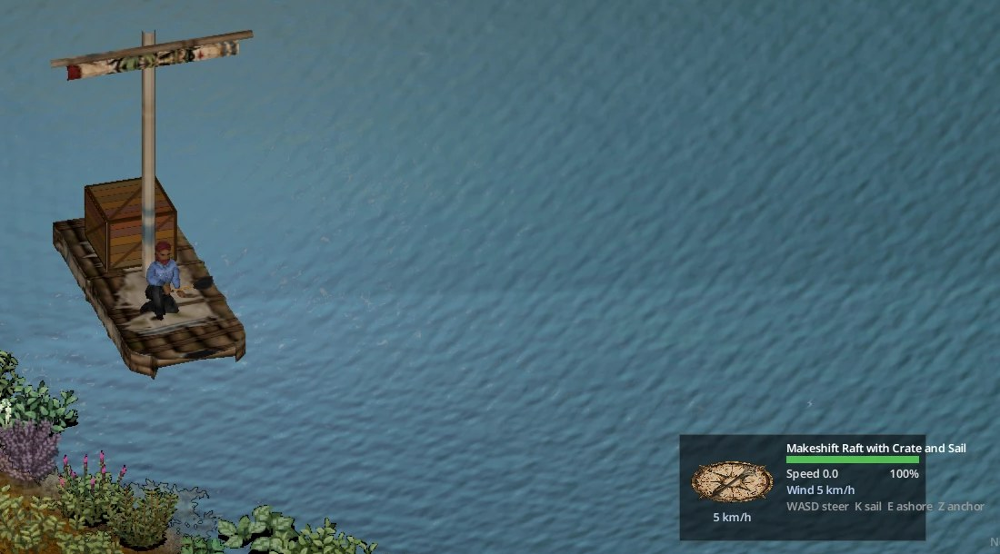
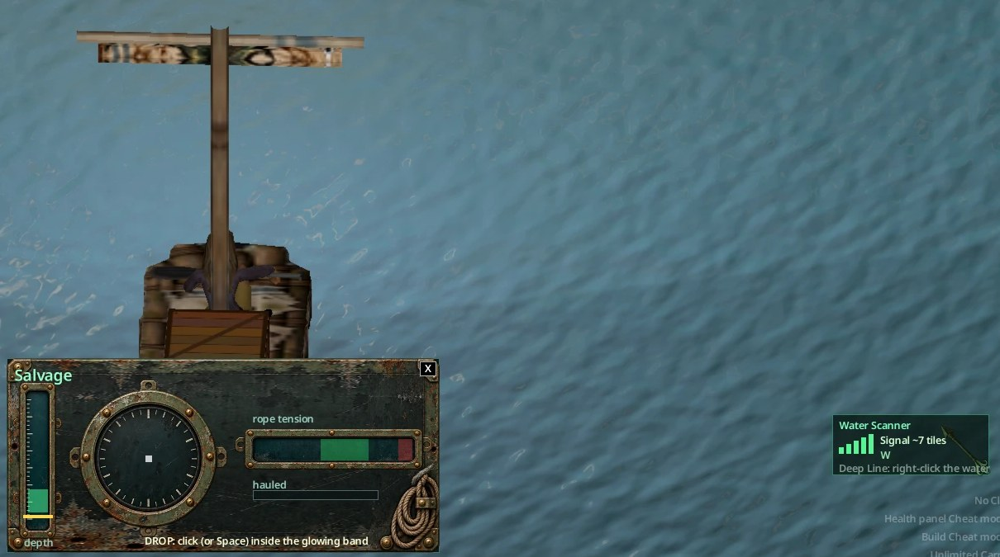
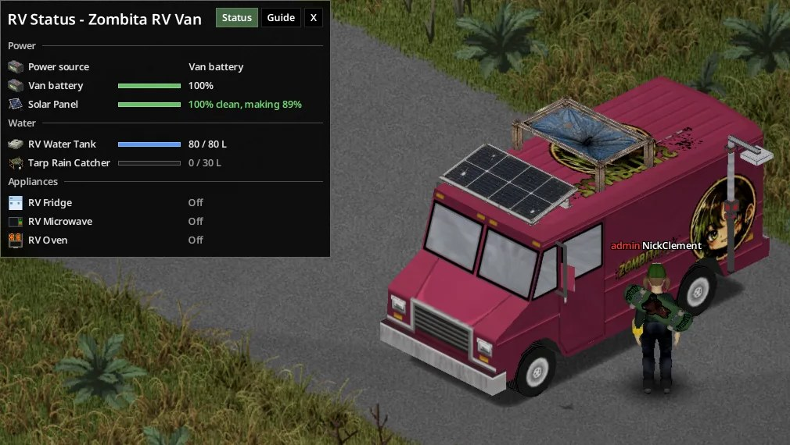
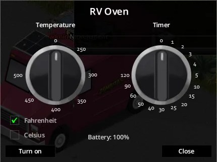
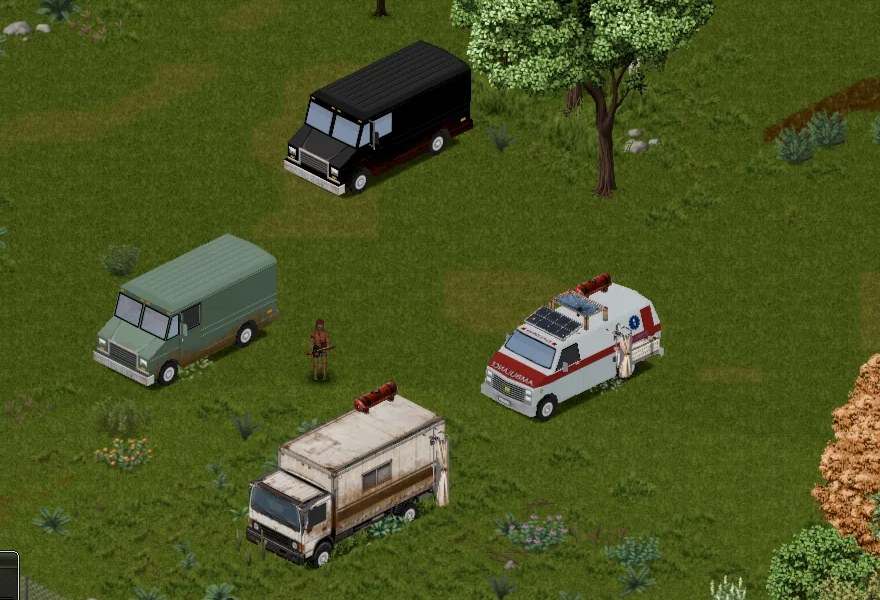
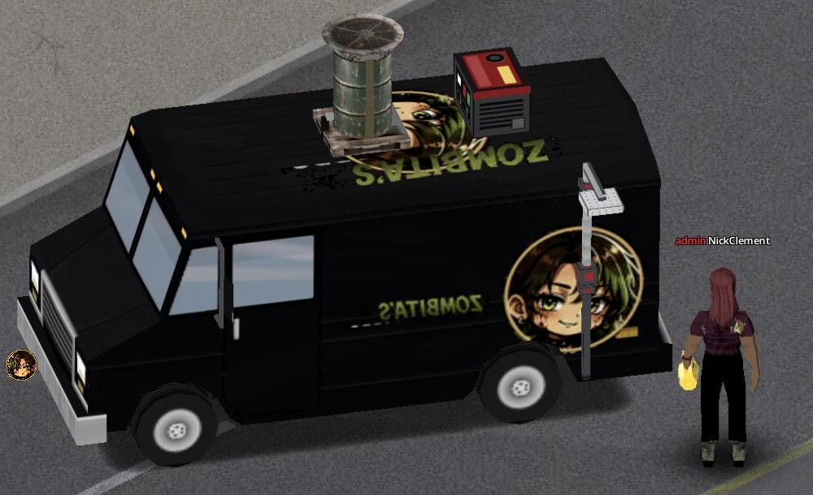
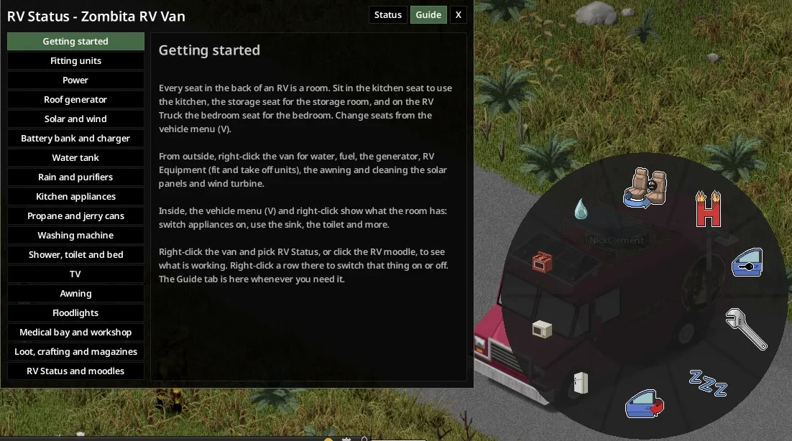
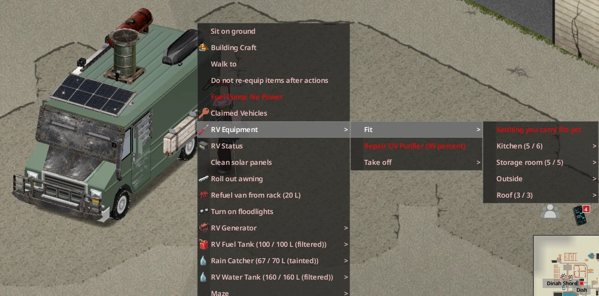

The game side
The server runs my own multiplayer mod, now v1.8.180 with 870 Lua files and an admin panel with 52 module switches, updated on a live server with versioned changelogs.
Engine work
Running all this live means knowing the engine. I traced a vanilla Build 42 crash (a null slot in hen hutch packets on chunk unload) into the 42.21 jar and shipped a guard. I found that command strings over 32 KB crash every client. I wrote an event profiler that wraps every handler across all mods, which caught an 83 s freeze and, before it, a 148.8 s stall from the same third-party handler; the logs and cause went to its author. And I worked out what stops a mod being removed from a live Build 42 save, and built a fix, proven on test servers. Full evidence: logs, stack traces and the shipped fixes.
Public Workshop mods
15+ public mods for Build 42, among them Zombita Raft (rafts and boats with a movement model written from scratch), Zombita RV Living and its KI5 add-on, Zombita Bows (an Archery skill with 146 hand-made animation files), Zombita Bikes (pedal bicycles with our own models and riding animations), and Zombita Guns, Melee Weapons and Vehicle Armor. Others add ores, off-grid utilities and a boss system, and the phone's games (Arcade, Chess, Werewolf and Cards Against Zombita) are Workshop items of their own.













Zombita NPC System
My newest work, in testing with my server's admins since November 2026. Survivor NPCs with personalities, needs and routines, who learn skills from what they do, pass gossip about you from house to house, keep homes and diaries, and drive with the same motion code on the server and every client. An optional LLM brain can only send intents that the Lua side checks and may refuse. A public Workshop release is planned. The NPC System page has the details and clips from testing.
Zombita Pulse: NPCs that learn from real players
Pulse is a separate server mod, with a small part on each player's PC, that records how real players move, search, fight and drive, so the NPCs can learn to act like players. Nobody is recorded by name: each player gets a code made from a secret that lives only in the server's memory and changes every 24 hours and at every restart. No Steam IDs, character names, chat or IPs are kept, and players agree to it in the server's terms.
It logs walking four times a second, every door, window and fence crossed, timed actions, items taken and stored, fights (with footwork ten times a second while a zombie is close), reactions when a zombie comes into view, and driving. It runs inside a cost budget and can be switched between full, light and paused from the website.
A Python analyzer turns the data into training tables, routes and crossings for the NPC walker, a driving map, and models for the Python NPC Brain. The first model is already in the NPC mod: a 160-tree boosted forest, compiled into Kahlua Lua, that picks an NPC's next footwork move against zombies. On 51,856 held-out fight moments it picks the move the real player made 72.6% of the time (balanced accuracy 0.57, where chance is 0.125).